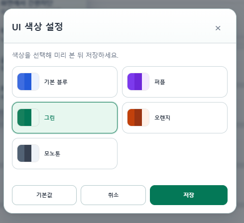
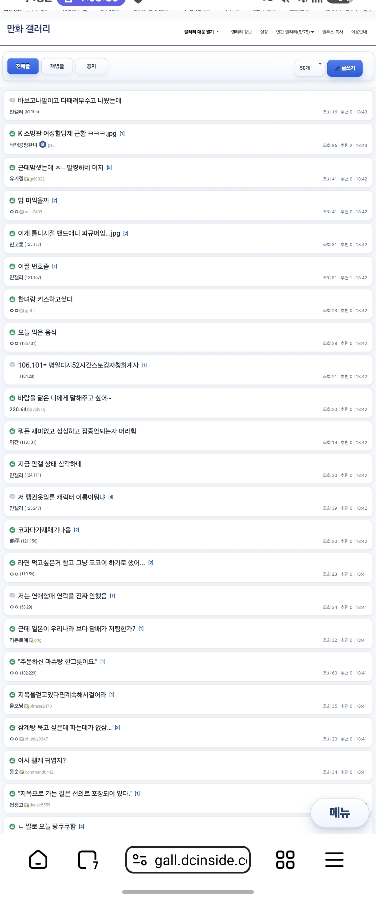
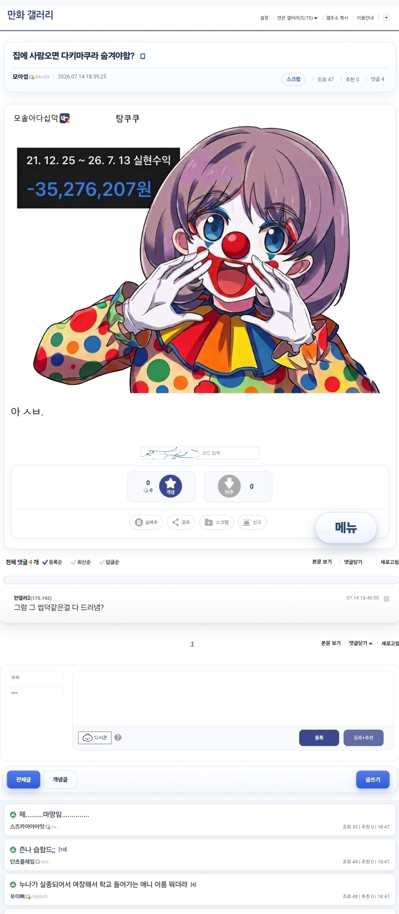
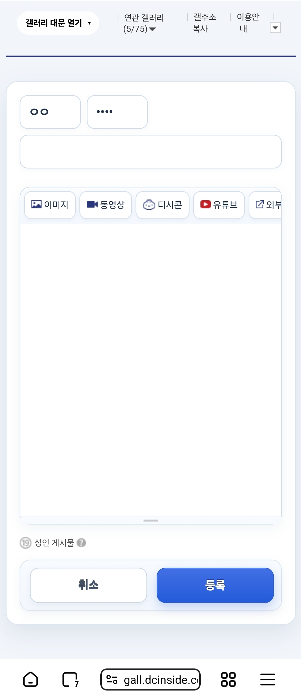
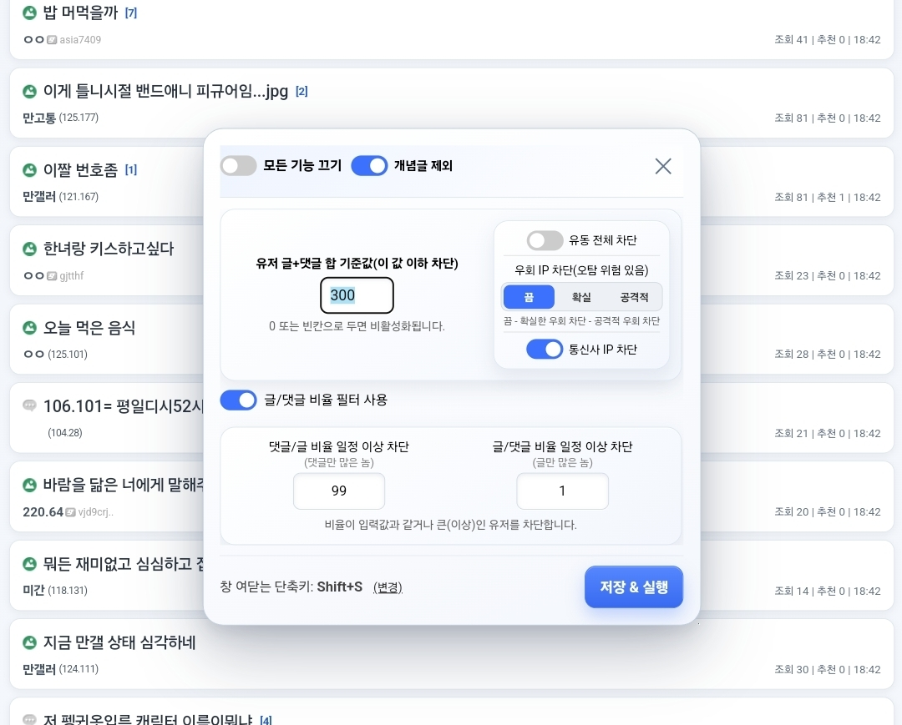
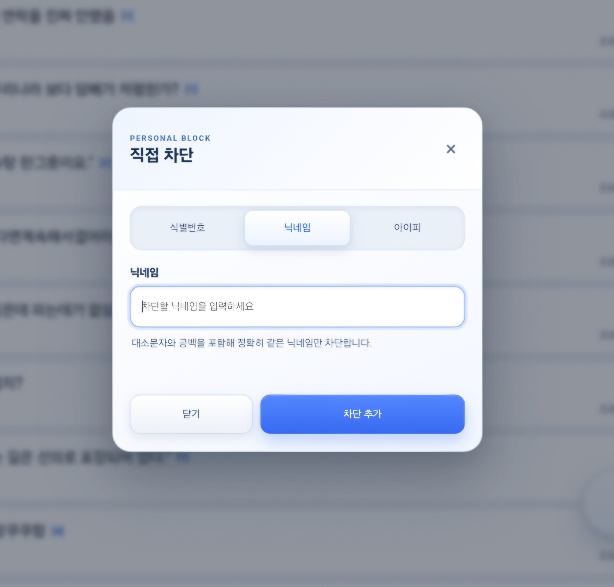
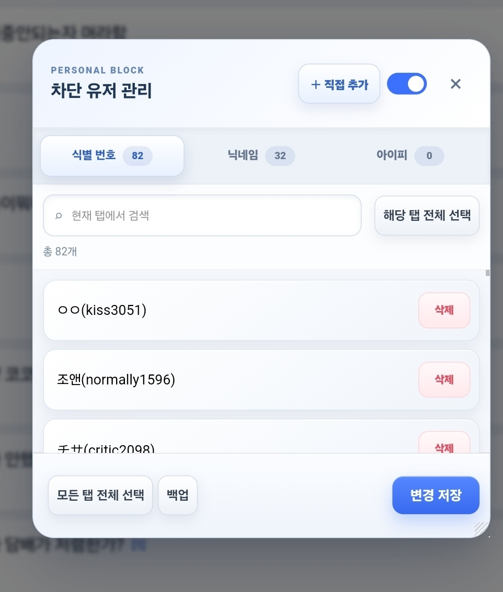
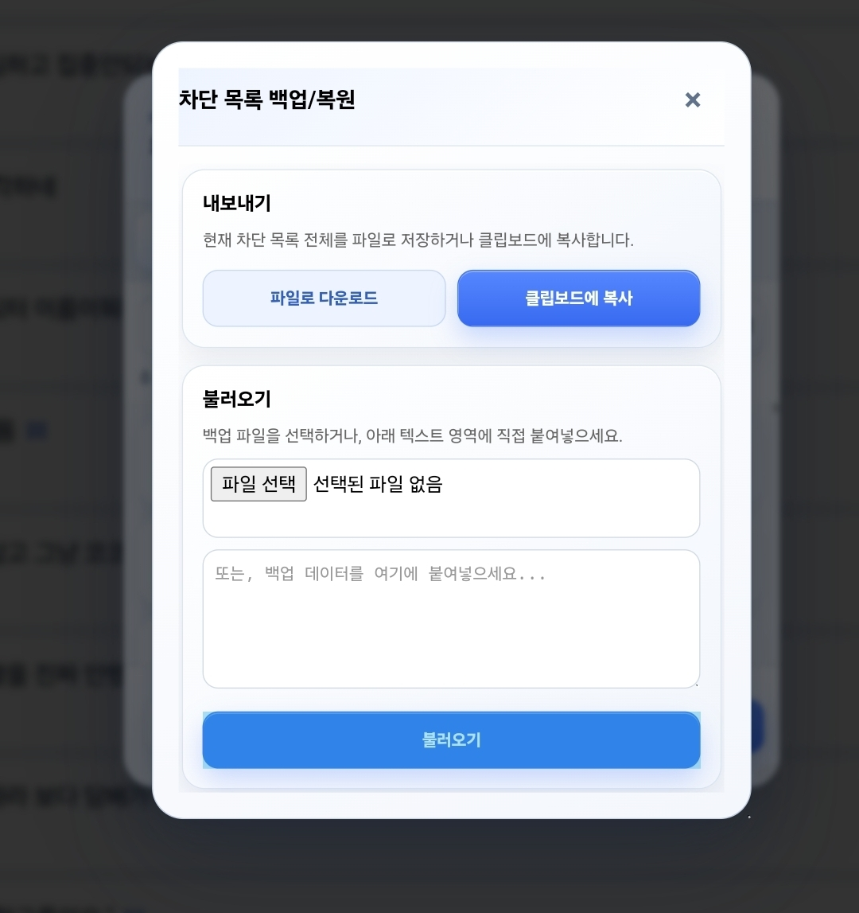
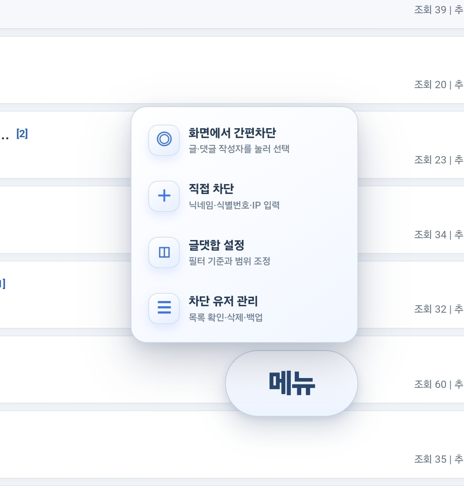
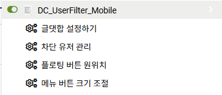

깡계 활동량 필터
글·댓글 합과 글댓비 설정 등 활동 패턴을 기준으로 사용자를 선택적으로 차단합니다.
MOBILE 3.4.7 · PC 1.9.6
활동량이 적은 계정부터 유동·통신사·우회 IP, 직접 지정한 닉네임·UID·IP까지 한곳에서 관리하고, 5가지 색상으로 필터 UI를 꾸밀 수 있는 디시인사이드 사용자 필터입니다.
Tampermonkey 설치와 브라우저 개발자 모드 설정이 필요합니다.
모바일 버전은 PC에서도 사용 가능합니다.
FEATURES
자동 차단 기준은 세밀하게, 직접 차단은 빠르게, 저장된 목록은 안전하게 옮길 수 있습니다.
글·댓글 합과 글댓비 설정 등 활동 패턴을 기준으로 사용자를 선택적으로 차단합니다.
유동 전체, 통신사 IP, 우회 IP별 차단 강도를 조절해 필터링할 수 있습니다.
닉네임·UID·IP를 간편차단하고 목록을 삭제하거나 백업·복원합니다.
목록, 본문, 댓글, 글쓰기·수정 화면과 팝업을 작은 화면과 터치 조작에 맞춥니다.
블루·퍼플·그린·오렌지·모노톤을 즉시 미리 보고 저장합니다. PC에서는 필터 UI에만 적용됩니다.
탭과 앱으로 돌아왔을 때 실제 DOM·설정 변화가 있을 때만 필요한 전체 필터링을 수행합니다.
SCREENSHOTS
3.4.6의 색상 프리셋과 플로팅 메뉴, 글 목록부터 본문·댓글·글 작성, 필터와 직접 차단·목록 관리까지의 실제 화면입니다. 이미지를 누르면 원본 크기로 볼 수 있습니다.
NEW IN 3.4.6 / 1.9.6
기본 블루, 퍼플, 그린, 오렌지, 모노톤 중 하나를 저장하면 모바일 화면과 DCUF 팝업이 같은 강조색을 사용합니다. PC는 사이트 원본 UI를 건드리지 않고 필터가 만든 버튼과 팝업에만 적용됩니다.










PC & MOBILE
* PC는 DCUF 필터 버튼과 설정·차단·백업 팝업에만 색상이 적용됩니다.
INSTALL
사용 환경에 맞는 안내를 따라 설치하세요. 모바일은 확장 프로그램 지원 브라우저와 데스크톱 사이트 모드를 권장합니다.
Chrome · Edge · Vivaldi
Chromium 기반 브라우저에 Tampermonkey를 설치합니다.
확장 프로그램 관리 화면에서 개발자 모드를 켭니다.
아래 설치 버튼을 누르고 Tampermonkey에서 스크립트를 설치합니다.
디시인사이드 페이지를 새로고침합니다.
확장 프로그램을 지원하는 Chromium 기반 모바일 브라우저를 준비합니다.
Tampermonkey 또는 Tampermonkey Legacy를 설치합니다.
데스크톱 사이트 모드를 기본값으로 설정합니다.
아래 설치 버튼을 누르고 Tampermonkey에서 스크립트를 설치합니다.
Tampermonkey의 도구 → Import from URL에 아래 주소를 붙여넣으세요.
https://github.com/domato153/dc-uidfiltering/raw/refs/heads/Mobile/Dc_UserFilter_Mobile.user.js
공격적 우회 IP 차단은 오탐 가능성이 있습니다. 모바일 버전의 경우 광고 차단 도구와 충돌하거나 로딩이 비정상적으로 느리면 디시인사이드를 예외 처리한 뒤 다시 확인하세요.
{kind=link}
{kind=link}
{kind=link}
{kind=link}
{kind=link}
{kind=link}
{kind=link}
{kind=link}
{kind=link}
{kind=link}
{kind=link}
{kind=link}
{kind=link}